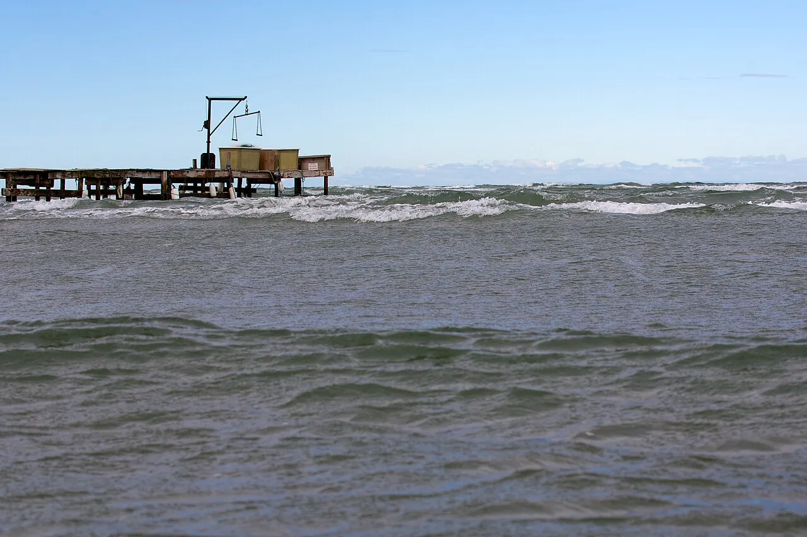

Beauduc
Camargue, France · kitesurf, windsurf

Plage sauvage au bout d’une piste de sable, au cœur de la Camargue. Un spot de glisse mythique, isolé et plat, pour le mistral comme pour les vents de mer.
- Lieu
- Camargue, France
- Niveau
- Intermédiaire
- Activités
- kitesurf, windsurf
- Type d'eau
- Mer / océan
- Coordonnées
- 43.37, 4.58 (position approximative du secteur)
Dangers à connaître
- Mistral offshore qui pousse au large.
- Accès isolé, secours éloignés.
Le conseil d'Ocean Buddy
La piste d’accès est longue et sableuse : prévois eau, ombre et un véhicule adapté.
Ouvrir dans Ocean Buddy Télécharger sur l'App Store
Source : Fiche Ocean Buddy · septembre 2026 · à vérifier localement.